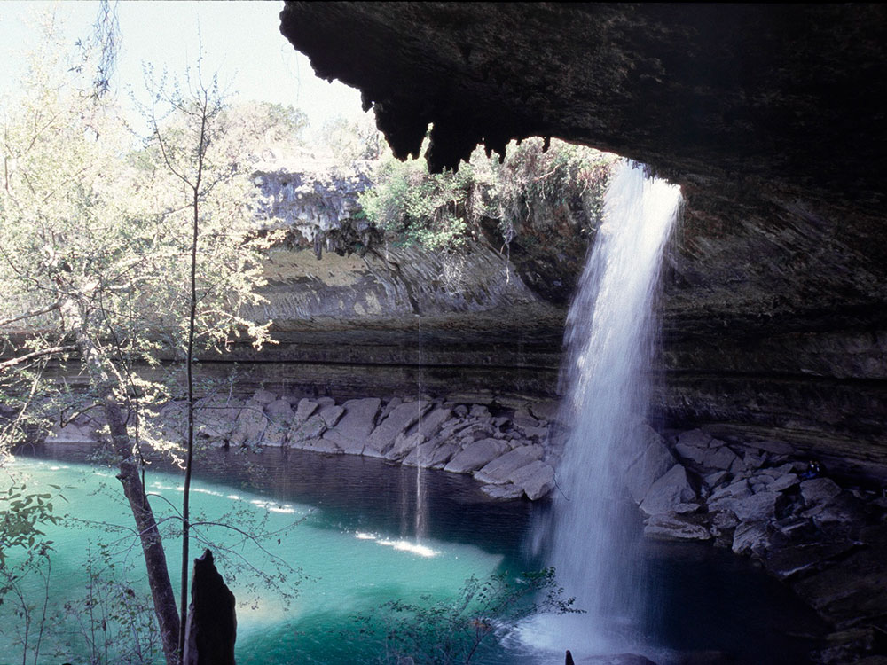
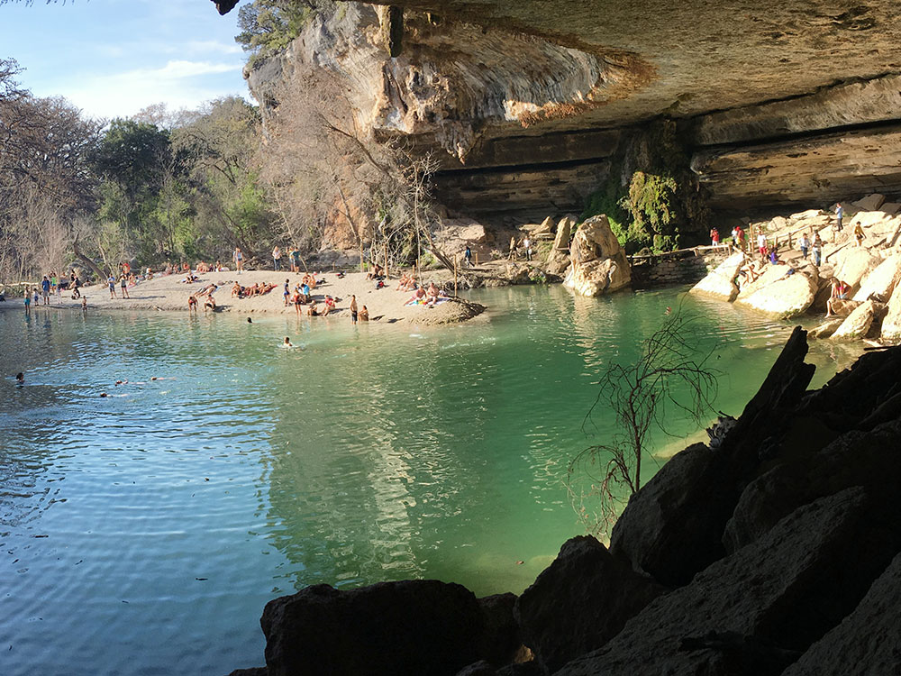

Texas State Park adjacent to the LBJ Ranch featuring a living history farm, American bison, nature trails, and the visitor gateway for the LBJ National Historical Park.
General Information
How to Get There
From Fredericksburg (14 mi): Take US Highway 290 East toward Stonewall for approximately 14 miles; turn right onto Park Road 52 at the park entrance sign and follow it to the visitor center parking area.
Overview
Lyndon B. Johnson State Park and Historic Site is a Texas state park along the Pedernales River near Stonewall, created in the 1960s to honor Lyndon B. Johnson and to interpret the life of the Hill Country he came from. It also serves as the visitor gateway for the adjacent LBJ Ranch District of Lyndon B. Johnson National Historical Park, where free self-guided driving permits are issued. The Texas Parks and Wildlife Visitor Center holds exhibits on the Texas Hill Country, pioneer life, and Johnson's presidency, with memorabilia, interactive displays, and a short orientation film. Visitors also come to see the Sauer-Beckmann Living History Farm, bison and Texas longhorns, and two mid-1800s German immigrant log cabins that reflect the region's German settlement heritage. The park offers an amphitheater, group facilities, and a seasonal swimming pool, and spring wildflowers add to its appeal.
Access
The park is on Park Road 52, just off US 290 near Stonewall, about 14 miles east of Fredericksburg and roughly 16 miles west of Johnson City. Austin is about an hour's drive to the east. Visitors arrive by car, and parking is available at the visitor center area; there is no public transportation. Because ranch permits are issued here, most guests stop at the visitor center before driving the short distance east on US 290 to the national park's LBJ Ranch entrance. Check hours before you arrive, since facilities such as the farm have seasonal schedules.
Seasons
Spring is the most popular time, when bluebonnets, Indian paintbrush, and other wildflowers bloom along the roadsides and in the park's meadows, usually peaking in March and April. Summer is hot, but the Sauer-Beckmann farm opens earlier in the day, and the swimming pool opens seasonally for relief from the heat. Fall brings cooler temperatures and lighter crowds, while winters are mild with occasional cold weather. The farm operates on seasonal hours and is closed on certain days, so confirm the schedule, and the peach orchards in the Stonewall area make early summer a pleasant time for a drive through the region.
Things to Do
Visit the Sauer-Beckmann Living History Farm
Step back into the early 1900s at a working Texas-German farm where costumed interpreters perform daily chores such as cooking on wood-burning stoves, tending livestock, gardening, blacksmithing, and preserving food.
See Texas Longhorns and American Bison
Observe iconic Texas longhorn cattle and American bison grazing in pastures along the Pedernales River.
Explore the Visitor Center
View exhibits and memorabilia from Lyndon B. Johnson's presidency, watch educational films, and learn about the people, cultures, and landscapes that shaped his life.
Tour Historic Cabins
Visit the Behrens Cabin and the Danz Cabin to experience how early German settlers lived in the Texas Hill Country during the 19th century.
Walk Scenic Nature Trails
Enjoy easy walking trails that pass through forests, grasslands, creek corridors, wildflower fields, and wildlife viewing areas.
Visit the Adjacent LBJ Ranch
Pick up a free driving permit and continue your journey through Lyndon B. Johnson's historic ranch located next to the park.
Enjoy Seasonal Demonstrations
Depending on the time of year, visitors may see sausage making, sheep shearing, canning, harvesting, and other traditional farm activities.
Top Trails
Nature Trail
Distance: Approximately 1.2 miles
Difficulty: Easy
Highlights: Longhorn viewing areas, bison pastures, native plants, creek crossings, and scenic Hill Country landscapes.
Visitor Centers
The Texas Parks and Wildlife Visitor Center is the main stop for both the state park and the national park. It has exhibits on Hill Country history and Johnson's life, an orientation film, restrooms, and staff who can answer questions. This is also where visitors pick up the free driving permit for the LBJ Ranch District. The National Park Service's main Visitor Center is a separate facility in Johnson City.
Camping and Lodging
There is no camping or lodging within the park, but the group hall and amphitheater can be rented for events. Fredericksburg, about 14 miles away, has the widest selection of hotels, motels, inns, and bed-and-breakfasts, and Johnson City, Stonewall, and Blanco have smaller inns, guest ranches, and vacation rentals. Austin and Marble Falls are within roughly an hour. Campers can use nearby Pedernales Falls State Park, which has developed and primitive sites, or RV parks around Fredericksburg and Johnson City.
This article uses material from the Wikipedia articles and official tourism pages for the Lyndon B. Johnson State Park and Historic Site, which are released under the Creative Commons Attribution-Share-Alike License 3.0.


